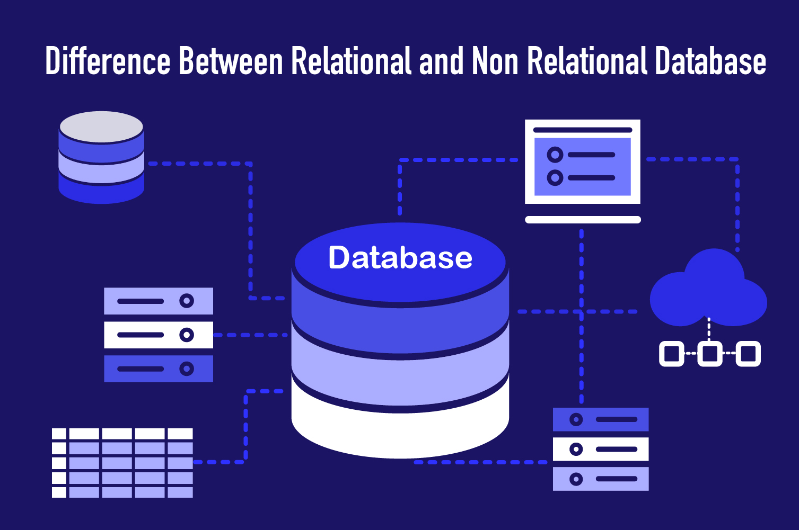

This project involved cleaning both sales and world population data, performing in-depth exploratory analysis in SQL Server, and creating insightful visualizations in Tableau and Power BI to effectively support the project’s goals.
By applying targeted SQL queries, I reshaped raw and fragmented data into a structured, reliable format that ensured accuracy and consistency. Leveraging advanced SQL functions, I performed an in-depth analysis of the sales dataset to identify critical trends, deriving actionable metrics such as profit margins and sales growth. The efficient data cleaning and exploratory process delivered a clear, comprehensive understanding of overall sales performance.
I carried out data cleaning, transformation, and exploratory analysis on global demographic datasets, including life expectancy, net migration, fertility rates, and mortality statistics. The analysis revealed valuable insights into patterns of population growth, progress, and decline over the past 50 years.
I conducted an in-depth exploration of global COVID-19 datasets using SQL, uncovering valuable insights into the pandemic’s trends and patterns. To ensure accuracy, I validated my analysis against official data published by the WHO. Throughout the project, I applied a range of SQL techniques, including Joins, Common Table Expressions (CTEs), Temporary Tables, Window Functions, Aggregate Functions, Data Type Conversions, and View creation, among others.
I undertook a project analyzing Adidas sales data to evaluate performance and profitability across different product categories and regions. By examining sales trends, regional variations, and profitability metrics, I derived actionable insights that support data-driven recommendations for optimizing business strategies and driving sustainable growth.

I developed a relational database system using a public dataset from the Brazilian e-commerce logistics company, Olist. The database enables multi-dimensional analysis of orders, covering aspects such as order status, pricing, payment, freight performance, customer location, product attributes, and customer reviews. Additionally, it incorporates a geolocation dataset that maps Brazilian zip codes to latitude and longitude coordinates. This structured relational database can be exported into SQL Server for population and further analytical exploration.
This interactive Sales Performance Dashboard provides a clear and actionable overview of essential business metrics, enabling quick and informed decision-making. It showcases total sales ($696K), COGS, profit, profit margin, and shipment volumes with year-over-year comparisons. Dynamic filters for Year, Month, and City allow users to analyze trends across time and regions. The dashboard also highlights top and bottom 5 products, warehouse and channel performance, monthly sales patterns, and customer-level insights to identify growth opportunities and churn risks. With clean visuals and an intuitive design, it serves as a powerful tool for monitoring and optimizing overall sales performance.

This Tableau dashboard visualizes eviction trends across the U.S., revealing that more than 503,000 Americans were evicted in 2023—an 11% rise since 2021. The analysis emphasizes the disproportionate burden on minority communities and highlights the strong correlation between eviction rates and homelessness in major cities such as New York and Phoenix. With interactive filters, users can compare data across years to uncover regional disparities and gain deeper insights into the social and economic impact of evictions.
This interactive Tableau Superstore Sales Dashboard delivers a comprehensive view of essential business metrics such as total sales, profit, order volume, and sales per customer, enhanced with year-over-year growth comparisons. Equipped with dynamic filters for region, category, customer segment, and shipping mode, it enables users to explore performance across multiple dimensions. Visual breakdowns of sales and profitability by state and product subcategory highlight top-performing regions and product lines. Designed for both strategic insights and day-to-day monitoring, the dashboard empowers stakeholders to make quick, data-driven decisions with clarity.
This Tableau dashboard provides a comprehensive analysis of customer acquisition, retention, and revenue patterns between 2020 and 2023. It showcases key insights into cohort behavior, monthly growth, and demographic segmentation by age and gender. Users can easily pinpoint peak acquisition periods, examine repeat purchase trends, and evaluate customer lifetime value. Built with business and marketing teams in mind, the dashboard delivers intuitive, interactive visualizations that empower data-driven strategic decision-making.
I leveraged Python to scrape cryptocurrency market data from the Binance exchange. To begin, I utilized the BeautifulSoup (bs4) library within Jupyter Notebook to parse and extract relevant information from the website’s HTML structure. Key attributes such as cryptocurrency names, prices, and trading volumes were captured and organized into a structured Pandas DataFrame, where each row represented a cryptocurrency and each column denoted a specific metric. Finally, the cleaned dataset was exported to a CSV file, enabling efficient storage, further analysis, and comparison with data from other cryptocurrency exchanges.